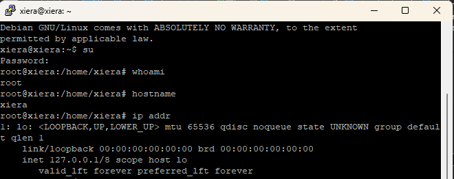
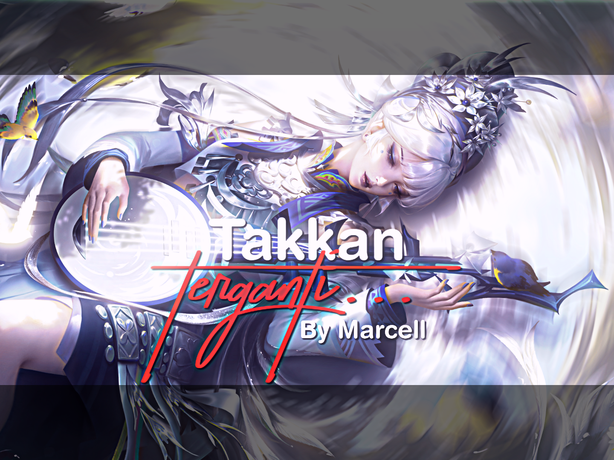
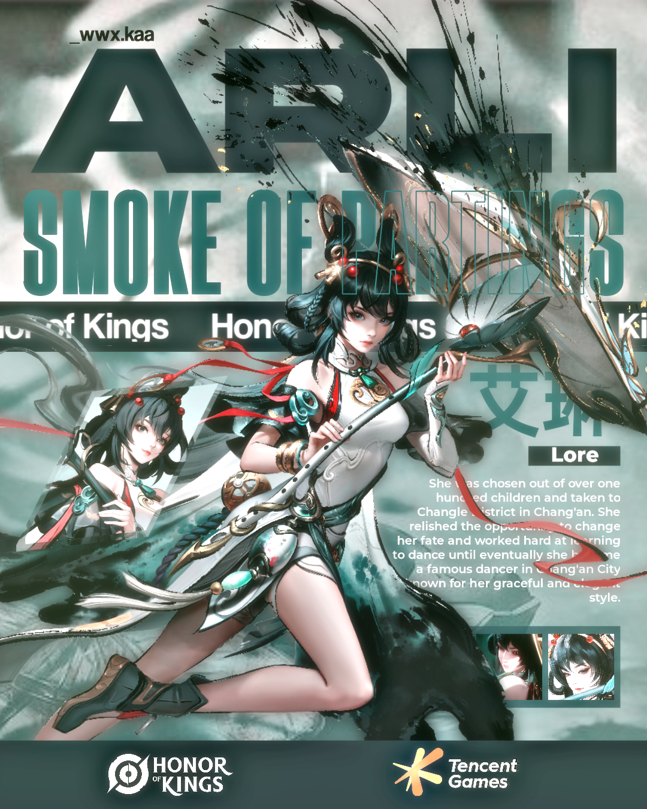
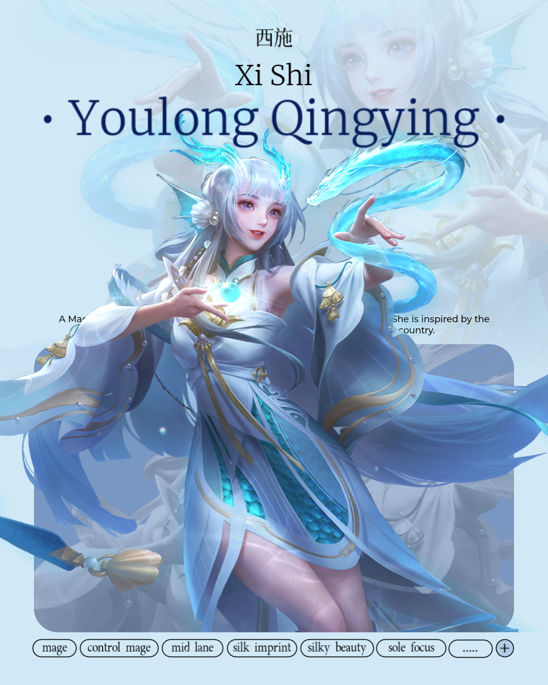

Minat utama
Jaringan komputer, konfigurasi router, administrasi Linux server, dan pemecahan masalah konektivitas maupun layanan.
Pelajar SMKN 1 Nglipar bidang Teknik Komputer dan Jaringan yang tertarik pada jaringan komputer, administrasi server, dan troubleshooting. Saya senang belajar melalui praktik, mendokumentasikan proses, dan mencari solusi dari masalah teknis.
Saya merupakan pelajar SMKN 1 Nglipar jurusan Teknik Komputer dan Jaringan (TKJ). Selama pembelajaran, saya mengenal dasar konfigurasi perangkat jaringan, instalasi sistem operasi server, serta pengujian layanan jaringan di lingkungan praktik.
Jaringan komputer, konfigurasi router, administrasi Linux server, dan pemecahan masalah konektivitas maupun layanan.
Mengikuti langkah secara terstruktur, menguji hasil konfigurasi, mencatat kendala, dan memperbaiki berdasarkan hasil pengujian.
Daftar berikut menggambarkan materi dan tools yang pernah dipelajari atau digunakan dalam praktik sekolah.
Dasar topologi jaringan, pengalamatan IP, subnetting, kabel LAN, serta konfigurasi dan pengujian jaringan.
Pengenalan konfigurasi router menggunakan MikroTik dan Winbox, termasuk pengaturan jaringan dasar.
Praktik instalasi Debian Server dan pengenalan konfigurasi layanan jaringan.
Pengenalan layanan berbagi file dan akses jarak jauh, serta pemeriksaan kendala konfigurasi.
cantikania@debian9:~$ whoami
Cantikania Finata — Pelajar TKJ SMKN 1 Nglipar
Fokus: MikroTik · Debian Server · LAN & Troubleshooting
Berikut beberapa pekerjaan praktik yang relevan dengan bidang TKJ. Klik kartu proyek untuk melihat ringkasan konfigurasi dan hasil pengujian.

Mempelajari pengaturan jaringan pada router MikroTik dan memahami hubungan perangkat dalam topologi LAN.

Menyiapkan lingkungan virtual Debian untuk mempelajari administrasi server dan pengujian layanan jaringan.

Mempelajari pembuatan folder berbagi di Debian dan menguji akses dari komputer klien melalui jaringan lokal.

Mempelajari fungsi layanan jaringan dan tahapan konfigurasi serta pengujian dasar dalam lingkungan server.
Ruang untuk menampilkan eksplorasi desain grafis, video editing, motion, poster, dan karya visual lainnya.

Eksplorasi tipografi, komposisi visual, transisi, dan penyuntingan video.

Latihan hierarki informasi, komposisi, warna, dan tipografi agar pesan mudah dipahami.
Saya juga mengembangkan kemampuan menyusun jobsheet, laporan praktikum, dan catatan troubleshooting agar proses konfigurasi mudah dipahami serta dapat ditinjau kembali.
Dokumentasi Persiapan VM dan langkah instalasi Debian di VirtualBox.
Dokumentasi tujuan, alat dan bahan, tahapan konfigurasi, hasil pengujian, serta kesimpulan.
Mencatat gejala, pemeriksaan yang dilakukan, penyebab yang ditemukan, dan solusi yang berhasil diuji.
Dokumentasi konfigurasi layanan berbagi file melalui jaringan lokal, termasuk pengaturan akses dan pengujian dari komputer klien.






Klik poster untuk memperbesar gambar. Note: Editing dilakukan secara mandiri untuk keperluan portofolio. Materi visual dan audio yang digunakan dapat berasal dari pihak ketiga. Konten ini bukan rilis resmi dan tidak dimaksudkan untuk mengklaim hak cipta atas materi aslinya.
Eksperimen video editing yang menggabungkan tipografi, komposisi visual, transisi, dan permainan warna untuk membangun suasana visual yang ekspresif.
Note: Editing dilakukan secara mandiri untuk keperluan portofolio. Materi visual dan audio yang digunakan dapat berasal dari pihak ketiga. Konten ini bukan rilis resmi dan tidak dimaksudkan untuk mengklaim hak cipta atas materi aslinya.
Untuk peluang PKL, kolaborasi belajar, atau pekerjaan pemula di bidang IT.
Jika pratinjau PDF tidak muncul di browser HP, gunakan tombol Buka / Unduh PDF ↗ di atas.